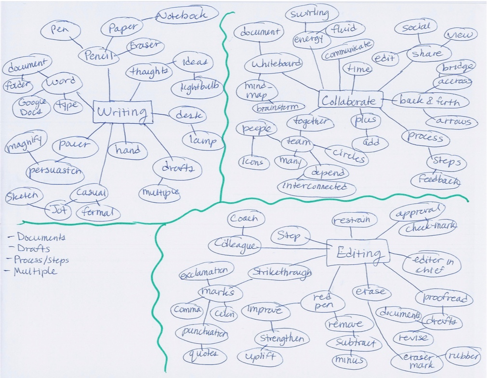
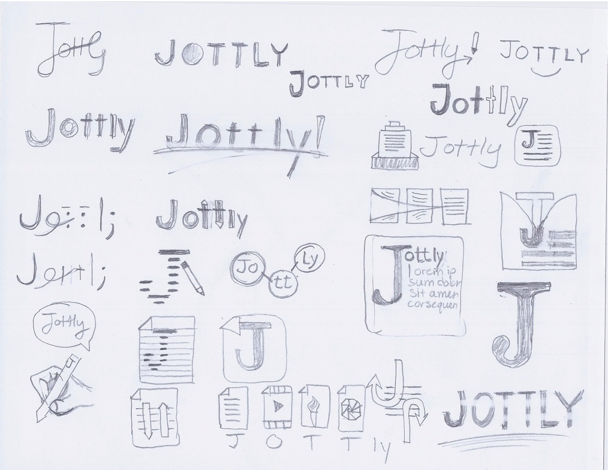
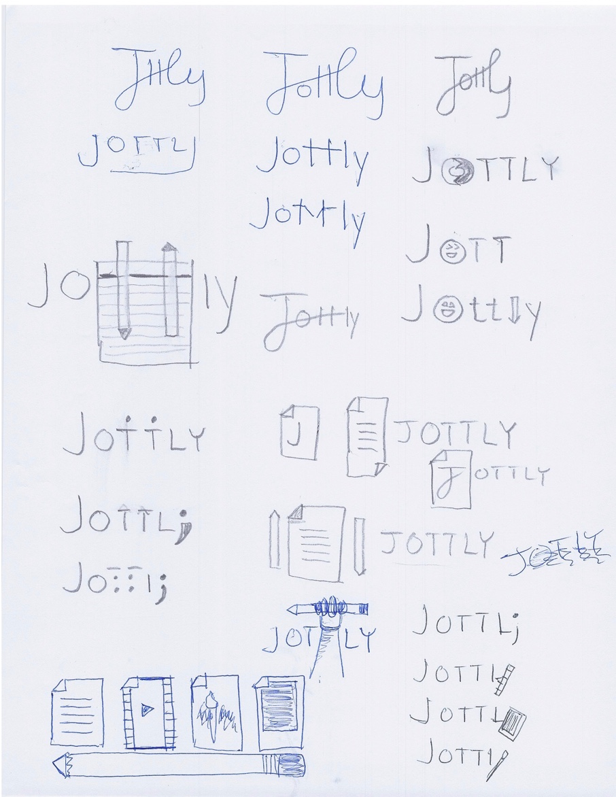
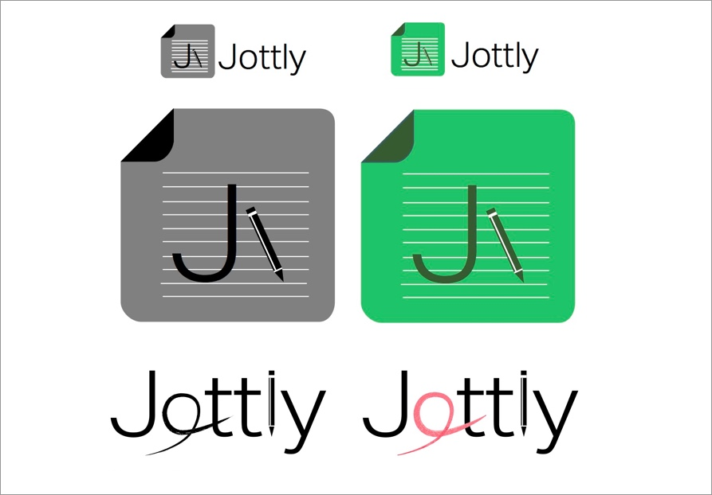

Jottly is the first collaborative platform that brings writers and editors together and gives them tools to create and publish better copy. However, you wouldn’t even know this new software as a service (SaaS) startup existed without some powerful marketing muscle. The team at Jottly needed a complete brand identity and a product landing page that showcased the power of their service, while distinguishing the platform from a variety of other cloud document editing and sharing products already available.
Research & Identity Exploration
Although Jottly seemed like a promising new service, one that would solve a problem for a lot of authors, I had to dig deeper into understanding the value Jottly was offering in addition to the short and long-term goals of the company. How do you get past the hype and find the real solution being offered? Ask the right questions. The following list includes sample questions I posed to the folks at Jottly before my pencil began to hit the sketchpad.
- Why are you building the Jott.ly service?
- Can you describe all the specific functions Jott.ly is providing?
- Who is your audience?
- Who are your competitors and how does Jott.ly differentiate itself from other collaborative platforms already in this space?
- How do you want people to feel when they interact with Jott.ly and your company?
- What are the three most critical things you want your users to do when they visit the Jott.ly site?
- Name 5 keywords that best describe Jott.ly
- Complete the following statements by filling in the blanks: Jott.ly will help our users do (blank) more (quickly / easily / painlessly / thoroughly).
- When people use Jott.ly they will stop feeling (blank) and start feeling more (blank) instead
- How will you measure the success of Jott.ly? What are your short-term goals after launching Jott.ly?
- After Jott.ly launches, how will you maintain the service? Do you have other ideas to further the development of Jott.ly?
Developing the right set of questions is not easy. Is my list perfect? Of course not. I’m sure this list could be added to. However, I’ve learned that making an initial investment in developing the right set of questions (and facilitating that Q&A session) helps you save time iterating and ultimately delivers a better product for the client.
Lauren Bacon (@laurenbacon) has a plethora of excellent insights into learning how to ask better questions for creative projects in her book Curious for a Living. I highly recommend you check it out. It’s a quick read and I found even going back and skimming chapters was a helpful refresher when I was developing questions for Jottly.
These insights gathered from the beginning played a great influence on the direction of the overall brand identity (logo, taglines, color palette, copy) and the structure of the landing page.
   